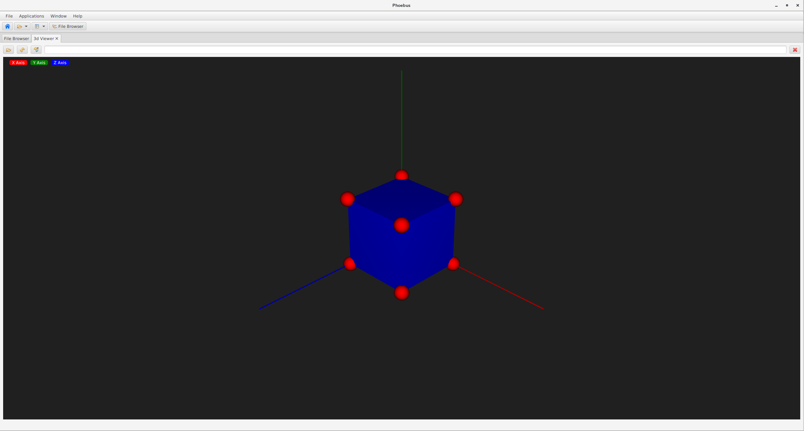

3D Viewer¶
Overview¶
The 3d Viewer is a tool that allows users to configure 3 dimensional structures using spheres, cylinders, and boxes.
These structures are defined in shape file (*.shp) and parsed by the application.
The resultant structure is then rendered on screen. This structure can be viewed in the application which allows rotation, zoom, and movement.
The individual spheres, cylinders, and boxes that make up the structure can have their coordinates, sizes, and colors specified.
Shape (.shp) File Syntax¶
The viewer parses shape files from beginning to end. Any error in the shape file will cause the parsing of the entire file to fail and no resulting structure will be rendered.
- Comments
Shape files can have comments. A comment is a line of text that starts with a ‘#’. This line will be ignored when parsing the shape file.
- Background Color
The background color of the viewer can be controlled using the following command.
background(r, g, b, A)This command has four parameters. The red, green, and blue values for the color are the first three. Each color value is an integer from 0 through 255. These are followed by the alpha value which allows you to control the transparency of the color. Alpha is a floating point number in the range [0, 1]. An alpha of 0 is transparent while an alpha of 1 is opaque.
Multiple background colors may be defined, however only the last defined background color will be used.
- Spheres
A sphere may be defined using the following command.
sphere(x, y, z, R, r, g, b, A)This command has eight parameters. The first three parameters are the x, y, and z values which represent the center point of the sphere in the three dimensional space. The x, y, and z parameters are floating point values. These are followed by the radius of the sphere, another floating point value. The final four parameters are the red, green, blue, and alpha values used to define the color of the sphere. Red, green, and blue are integer values in [0, 255] and alpha is a floating point value in [0, 1].
- Cylinders
A cylinder may be defined using the following command.
cylinder(x1, y1, z1, x2, y2, z2, R, r, g, b, A)This command has eleven parameters. The first three parameters are the x, y, and z values which represent one end point of the cylinder. The second three parameters are the x, y, and z values which represent the other end point of the cylinder. All x, y, and z parameters are floating point values. These are followed the cylinder’s radius. The radius is a floating point value. The final four parameters are the red, green, blue, and alpha values used to define the color of the sphere. Red, green, and blue are integer values in [0, 255] and alpha is a floating point value in [0, 1].
- Boxes
A box may be defined using the following command.
box(x1, y1, z1, x2, y2, z2, r, g, b, A)This command has 10 parameters. The first three parameters are the x, y, and z values which represent one corner of the box.The second three parameters are the x, y, and z values which represent the opposite corner of the box. All x, y, and z parameters are floating point values. The final four parameters are the red, green, blue, and alpha values used to define the color of the sphere. Red, green, and blue are integer values in [0, 255] and alpha is a floating point value in [0, 1].
If the first corner of a box was defined at (0, 0, 0) and the second corner at (100, 100, 100) then the box would have one corner at the origin and one corner at (100, 100, 100). Each of the boxes sides would be of length 100, and the boxes center point would be (50, 50, 50).
- Cones
A cone may be defined using the following command.
cone(x1, y1, z1, R, x2, y2, z2, r, g, b, A)This command has eleven parameters. The first three parameters are the x, y, and z values of the base, followed by the radius of the base. The second three parameters are the x, y, and z values of the tip of the cone. The final four parameters are the red, green, blue, and alpha values used to define the color.
- Tool Tips
A final string added to a shape defines a tool tip for the shape.
Example Shape File¶
# This is a comment. It will be ignored when the file is parsed.
# The background of the viewer is set to be nearly black.
background(32, 32, 32, 1)
# A red sphere of radius 10, is placed at each corner of the box we are about to define.
sphere( 0, 0, 0, 10, 255, 0, 0, 1, "Origin")
sphere(100, 0, 0, 10, 255, 0, 0, 1)
sphere( 0, 0, 100, 10, 255, 0, 0, 1)
sphere(100, 0, 100, 10, 255, 0, 0, 1)
sphere( 0, 100, 0, 10, 255, 0, 0, 1)
sphere(100, 100, 0, 10, 255, 0, 0, 1)
sphere( 0, 100, 100, 10, 255, 0, 0, 1)
sphere(100, 100, 100, 10, 255, 0, 0, 1)
# A blue box is defined with one corner at the origin, and the opposite
# corner at (100, 100, 100). This will result in a cube with each side
# being of magnitude 100.
box(0, 0, 0, 100, 100, 100, 0, 0, 255, 1)
# Cone along the X axis, base at x=200, radius 20, tip at x=300
cone ( 200, 0, 0, 10, 300, 0, 0, 255, 100, 100, 1, "X")
Resulting Structure
{kind=link}
Transparency¶
JavaFX does not sort 3D objects by depth. What this means is that you have to be thoughtful of the order you add 3D shapes to a scene. For example, if a sphere needed to be displayed inside a translucent box, the sphere would have to be added before the box. If the box first were added first, it would still be translucent, but the JavaFX renderer would not draw the sphere because it doesn’t sort the scene graph by depth.
Examples
- Here, the box is added first and the sphere is not drawn.
- Here, the box is added second and the sphere is drawn correctly.
{kind=link}
{kind=link}
Compatibility¶
The 3D Viewer requires support from the graphics system.
Known to work:
OpenJDK 11 on Mac OS 10.13.6
OpenJDK 11 on Windows 10
Oracle JDK 9, Oracle JDK 10, and OpenJDK 11 on RHEL 7.6
Running on Linux requires direct graphics on a local machine.
Can be made to work:
Oracle JDK 10 or OpenJDK 11 on Centros 7.5 running inside VirtualBox, hosted on RHEL 7.6, when setting
-Dprism.forceGPU=true
In case of problems which usually include error messages
System can't support ConditionalFeature.SCENE3D,
start the program with -Dprism.verbose=true and -Djdk.gtk.verbose=true